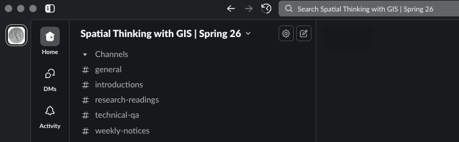
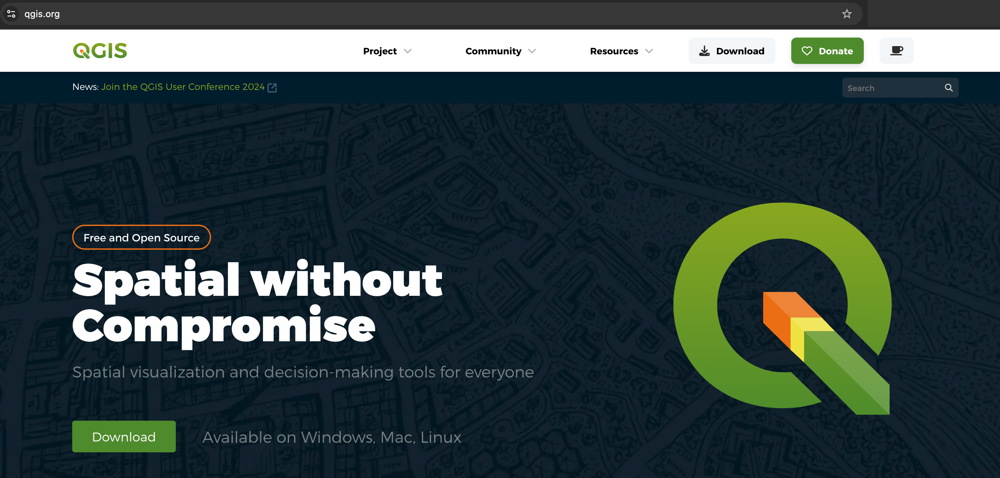
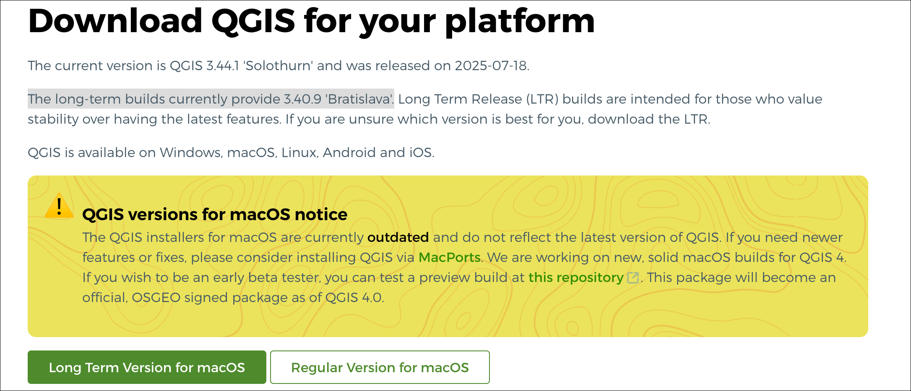
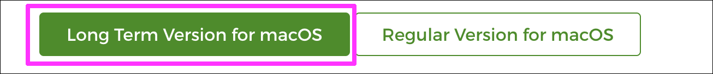
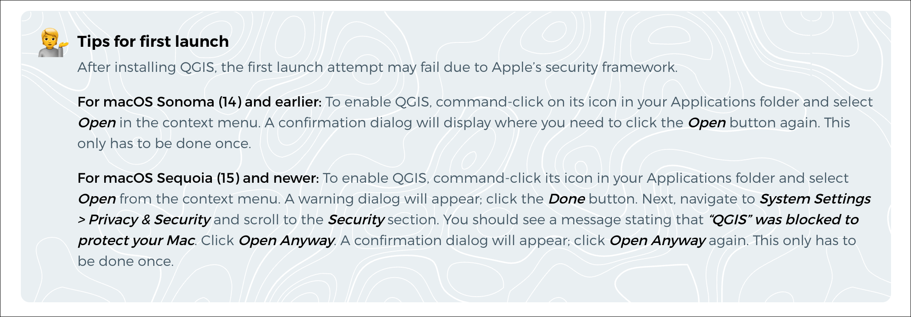

Spatial Thinking with GIS: Course Introductions
Spring 2026 | UENV 3200 - CRN 11009 + UURB 3210 - CRN 111008

👤 Faculty Instructor
- Stephen Metts | The School for Public Engagement: International Affairs
👋 Introduction
Welcome to Spatial Thinking with GIS, spring semester | 2026
I’m looking forward to meeting you as follows on the first day of class:
- 📅 Date: Tuesday 01/27/26
- ⏰ Time: 4:00pm - 6:40pm
- 📍 Location: Building: 66 5th Ave | Room: 005
During the first class meeting, we will accomplish the following:
- Instructor and Student Introductions
- Review course organization, essential materials and objectives.
- Preview course software platforms, primarily QGIS.
- Conduct Class 1 Demonstration Lab.
To ensure you are ready, please review the following documents and bring any questions that you may have to the first class:
- 🧭 Course Introduction (this document)
- 📘 Course Syllabus
- ✅ Course Expectations & Requirements
- 📧 Instructor Email
- 📅 Course Calendar
The course interface will be accessed via CANVAS within My New School. Here you will find:
- Core class documents
- Weekly content, data and assignments
- In-class quizzes & labs
- Upload location for weekly assignments
- Weekly announcements
Weekly materials will appear online at Canvas, generally on Tuesday at 7AM, on a weekly basis.
The actual weekly content endpoints, accessed via CANVAS, are housed at GitHub which is fully accessible, and can be downloaded on a weekly basis. If you would like to augment the online access for the course (available through 05/31/2026), you can easily print to PDF from a browser and save a copy of the assignment on your machine. You can also download the whole course repository at GitHub Download Zip.
If you do download the GitHub repository, make sure to do it towards the end of the course as all materials will then be fully revised, tailored and posted for the fall semester, 2025.
Towards the end of the semester, a archived repository listing will be provided to students to access indefinitely. This will be the easiest way to maintain access to all the weekly content going forward after the course closes on Canvas at the end of May, 2026.
💬 Course Communication
For course communication, we will utilize Slack. Our team name is GIS NINT5380 - Fall 2025 and can be accessed directly:
There is also a direct invite link to the Slack workspace (please do not share with others outside the course):
This invite will expire quickly; if you are unable to access the team via the link, contact the instructor for an updated invite. The instructor can also add you directly upon request.
If you are new to Slack, there is a overview guide available as follows:
Once you have navigated to the Slack team Spatial Thinking with GIS | Spring 26 and completed signup, send a hello to the class at the introductions channel. The following channels are available to the class, and each has a purpose as follows:

- 📌 general - location to post links, references, ect. that do not fit into more narrow channels.
- 👋 introductions - location to initialize yourself to the course Slack, and introduce yourself to the class.
- 📚 research-readings - location for research links, papers, references on a weekly basis.
- 🛠️ technical-qa - where the bulk of activity will happen over the course. Here is the location to post technical questions that arise during weekly assignments. This channel is monitored by instructor; but students should be as active as possible here, helping fellow students solve technical issues as they arise.
- 📣 weekly-notices - if there is an issue that needs to be addressed not tied to weekly technical issues or details in syllabus and course materials, it will be posted here.
💾 Data Storage and Backup
In addition CANVAS and the Slack workspace for the course, materials and software will be provided to complete all technical components of the course. As we move along throughout the course, you will start to accumulate significant spatial data. We will review early in the course data management protocols for spatial data; however, all this data will have to be housed somewhere when you are not immediately accessing and working with it in spatial software. To really cover all basis, a physical backup SSD drive coupled with digital online backup is highly recommended. Some good online storage options (one of which you may very likely already use) include:
- ☁️ Google Drive
- ☁️ Dropbox
- ☁️ Microsoft One Drive
- ☁️ Apple iCloud Drive
- ☁️ Box
📚 Course Readings
Course readings will be provided to students on a weekly basis; there is no required textbook for this course. Required readings will be made available through the course learning platform (Canvas) and are selected to support both the technical and theoretical components of each week’s topic. Weekly readings are an integral part of the course and will typically be assessed through short quizzes administered at the start of the proceeding week.
🧾 Weekly Quizzes
Reading quizzes open each Monday AM and cover the previous week’s content. Students can take the quiz anytime on Mondays leading up to each week’s meeting session on Tuesday evenings.
The first quiz will not occur until the 2nd class week which begins Monday 02/02/26.
💻 Course Software
The primary course software will be QGIS.

The Download landing is as following:
As part of the first week’s tasks, we will download the QGIS software and become familiar with its interface as well as working with spatial data in the vector model. It is assumed that you either have full access to labs on campus that have QGIS installed and/or you have your own machine with enough processing capacity and storage necessary for QGIS to run efficiently. We will discuss early in the course some of the options you might want to use: a combination of lab computers with your own computer; strictly your own machine or strictly the lab computers. Importantly and beneficially, flexibility exists with open source, non-proprietary software - as is indeed the case with QGIS.


QGIS has many versions of the software available. Of particular note are the current Long Term Release vs the Latest release. We will be using the Long Term Release - known as the ‘LTR’ version of QGIS which for the Spring 2026 term is 3.40.14 ‘Bratislava’. QGIS 3.40.14 'Bratislava' also known as simply QGIS 3.4. Note also that you can have multiple versions on one machine. We will be using the ‘LTR’ as this version is the best balance between recent, contemporary features and the least number of bugs/errors that can interrupt performance.

For macOS, once QGIS is downloaded to the downloads folder as qgis-macos-ltr.dmg, a double-click will begin the install process. One issue, however, is that macOS doesn’t recognize QGIS as a supported application and thus doesn’t allow a full launch of the software unless the following is completed. There are two processes; one for older operating systems, and one for the newer operating systems. Note the following guidance that you will also see on the QGIS Download Page